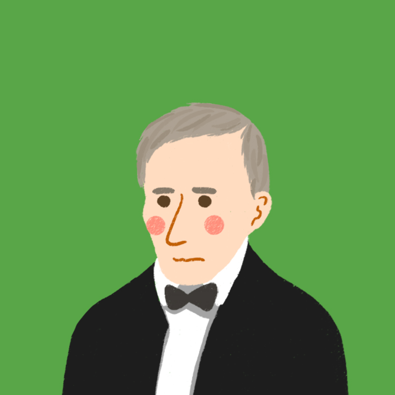

George Washington (1789-1797)
- A.K.A. the first one
- General during American Revolutionary War
- First elected president without any opposition
- Whiskey Rebellion
- Developed cabinet
- Established the Bank of America, approved Hamilton’s proposal
- Farewell Address
- FUN FACT: George Washington's favorite food was ice cream
John Adams (1797-1801)
- A.K.A. the one whose son was president too
- Harvard-educated
- XYZ affairs during French and Britain war
- Passed the Alien and Sedition Act
- FUN FACT: John Adams and Thomas Jefferson died on the same day
Thomas Jefferson (1801-1809)
- A.K.A. the guy on the nickel and who bought a really big chunk of land
- Drafted the Declaration of Independence
- Anti-Federalist (Democratic Republican), favored small states, cut army and navy
- Weakened Federalists party, combined both ideals
- Louisiana Purchase (1803)
- Embargo Act
- FUN FACT: He founded the University of Virginia
James Madison (1809-1817)
- A.K.A. the Father of the Constitution
- Engaged in War of 1812
- Drafted and promoted the Constitution and Bill of Rights
- One of three writers of the Federalist Papers (the others being John Jay and Alexander Hamilton)
- FUN FACT: He is Princeton’s First grad student
James Monroe (1817-1825)
- A.K.A. the one who claimed Central America was under the U.S. sphere of influence
- Anti-federalist, sympathized with French
- Era of Good Feelings
- Monroe Doctrine
- Panic of 1819 (banks failed and mortgages foreclosed)
- Missouri Compromise 1820
- FUN FACT: The capital of Liberia was named after Monroe because of his support for the colonization of Liberia

John Quincy Adams (1825-1829)
- A.K.A. the son of a president
- Era of Good Feelings
- Corrupt Bargain with Henry Clay (Speaker of the House)
- Tariff of Abominations (1828)
- FUN FACT: He regularly skinny-dipped in the Potomac River
Andrew Jackson (1829-1837)
- A.K.A. the guy on the $20 bill and one of the most hated presidents ever
- Era of the Common Man (nicknamed Old Hickory)
- Won the battle at New Orleans (War of 1812)
- War hero turned president
- Whig Party rose in opposition
- Second Bank of the United States and pet banks
- Indian Removal Act
- Nullification Crisis
- Force Bill (1833)
- FUN FACT: He taught his parrot how to curse
Martin Van Buren (1837-1841)
- A.K.A. the supporter of Jackson
- Little Magician
- Trail of Tears
- Panic of 1837
- FUN FACT: He popularized the work "OK"

William Henry Harrison (1841-1841)
- A.K.A. the guy who didn't do much
- Died 32 days into office
- Fought with Indians at the Battle of Tippecanoe (a war hero)
- FUN FACT: He was the last president born as a British subject
John Tyler (1841-1845)
- A.K.A. the guy who switched parties because he hated Andrew Jackson
- Democrat turned Whig
- Cabinet resigned
- Treaty of Wanghia
- Annexed Texas
- FUN FACT: He had 14 children who survived into adulthood

James Polk (1845-1849)
- A.K.A. the last president pre-Civil War who actually did something
- "Dark Horse"
- Secretly wanted California to apply to be a free state
- Manifest Destiny
- Oregon Treaty
- Mexican-American War
- Gold Rush
- FUN FACT: He promised not to run for a second term
Zachary Taylor (1849-1850)
- A.K.A. "Old Rough and Ready"
- War hero of War of 1812
- FUN FACT: He died from milk and cherry, which wwere infected by bacteria
Millard Fillmore (1850-1853)
- A.K.A. the Whig who was still on good terms with his party
- Compromise of 1850
- Admitted California
- FUN FACT: He married his teacher
Franklin Pierce (1853-1857)
- A.K.A. the guy who thought abolitionist would ruin the unity of the nation
- Gadsden Purchase
- Kansas-Nebraska Act (led to Bleeding Kansas)
- FUN FACT: His family affairs were quite grim
James Buchanan (1857-1865)
- A.K.A. the Northerner who sided with the South
- Panic of 1857
- Over-expansion
- FUN FACT: He is the last former Secretary of State to become President
Abraham Lincoln (1861-1865)
- A.K.A. the Civil War President on the penny and $5 bill
- "Honest Abe"
- Southern States seceded
- Rise of the Republican Party
- Emancipcation Proclamation
- 13th Amendment (1864)
- Gettysburg Address
- Assassinated by John Wilkes Booth
- FUN FACT: He was a great wrestler
Andrew Johnson (1865-1869)
- A.K.A. the first president to be impeached
- Alaska Purchase
- Reconstruction Era
- Opposed the 14th Amendment (1868)
- FUN FACT: He was drunk during his inauguration
Ulysses S. Grant
- A.K.A. the one whose initials fit "Uncle Sam"
- War hero of the Union turned president
- Had a bad Cabinet
- Transcontinental railroad completed
- 15th Amendment (1870)
- Credit Mobilier Scandal (1872)
- Panic of 1873
- Battle of Little Bighorn
- FUN FACT: He received a $20 speeding ticket for riding his horse and buggy too fast
Rutherford Hayes(1877-1881)
- A.K.A. His Fraudulency
- Compromise of 1877
- Weakended Republican Party
- FUN FACT: He restored faith in the presidency
James Garfield (1881-1881)
- A.K.A. the second one to get assassinated
- Proposed substantial civil service reform
- Assassinated after 200 days in office
- FUN FACT: He was ambidextrous and could write Latin and Greek at the same time
Chester A. Arthur (1881-1885)
- A.K.A. the guy whose reputation faded
- Chinese Exclusion Act
- Tariff of 1883
- Pendleton Act (reform civic service system)
- FUN FACT: He owned over 80 pairs of pants
Grover Cleveland (1885-1889)
- A.K.A. the guy who had a second term four years after his first one
- Won presidency from Democrats and reformed Republicans called "mugwumps"
- Interstate Commerice Act (1887)
- Dawes Severalty Act (1887)
- FUN FACT: He was the legal guardian to the girl he later married
Benjamin Harrison (1889-1893)
- A.K.A. "Old Tippecanoe"
- Grandson of William Garry Harrison
- Sherman Antitrust Act
- Billion-dollar Congress
- FUN FACT: He got electricity installed in the White House
Grover Cleveland (1893-1897)
- Panic of 1893
- Pullman Strike